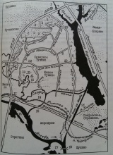

Страницы авторов "Тёмного леса"
Пишите нам! temnyjles@narod.ru
В данной электронной публикации использован естественнонаучный текст, написанный для научно-популярной брошюры: Коробко М.Ю., Насимович Ю.А. Тушино. М., Изд-во Ин-та иностранных языков, 2001. 51 с. (Серия "Природное и культурное наследие Москвы", Совет РАН по изучению и охране культурного и природного наследия, рисунки [и картосхема] Ю.Н.).
М.Ю.Коробко добавил текст по истории Тушина, но у меня в настоящее время нет этого текста в электронном виде.
Исчезнувшие и заключённые в трубу водотоки показаны точечной линией.
|  | 1 - Бутаковский залив (в прошлом - р. Чернавка, р. Грачёвка, Встречный ручей); 2 - Алёшкинский лес; 3 - зарастающие лесом водораздельные болота; 4 - родник; 5 - сад на р. Братовке; 6 - Захарковский сад; 7 - церковь Покрова Пресвятой Богородицы в Братцеве; 8 - ул. Фомичёвой; 9 - усадьба Братцево; 10 - Тушинская Чаша (Сходненский Ковш) и три ее болота (западное, центральное, восточное); 11 - пл. Трикотажная; 12 - церковь Спаса Преображения в Спас-Тушине (на Старой Горе, здесь же - Царикова гора); 13 - берег р. Москвы с ксерофильной растительностью на южном склоне; 14 - холм, где располагался лагерь Лжедимитрия Второго (Тушинского Вора); 15 - место, где в прошлом находилось село Тушино; 16 - Строгинский полуостров; 17 - Щукинский полуостров; 18 - Строгинский мост; 19 - Алёшкино; 20 - Захарково; 21 - Иваньково; 22 - Петрово (места, где располагались эти четыре деревни). |
Тушино в прошлом - это село северо-западнее Москвы близ впадения р.Сходни в р.Москву. Современное Тушино - это местность в Москве, или район, точнее даже два района, так как различают Южное и Северное Тушино. Интересно, что это современное Тушино расположено чуть севернее того места, где было соответствующее село. Весь этот обширный жилой массив отделён от остальной Москвы с юга рекой Москвой, а с востока Химкинским водохранилищем, то есть обособлен от неё не в меньшей степени, чем такой подмосковный город как Химки. Тушино окружено кольцом природных и т.п. территорий, которые примыкают к упомянутым водным объектам, а также к рекам Сходня и Братовка: полосой растительности между р.Москвой и Тушинским аэродромом, такой же полосой выше по течению р.Москвы, Тушинской Чашей и усадьбой Братцево на р.Сходне, садом у р.Братовки, Алёшкинским лесом, Захарковским садом вдоль Химкинского водохранилища, зелёной долиной р.Химки в Покровском-Стрешневе, перелесками вдоль устья р.Химки. Часть перечисленных объектов включена теперь в природный парк "Тушинский". Этим зелёным участкам и посвящён предлагаемый текст. Кроме того, вкратце рассматриваются рельеф, геологическое строение, прежняя речная сеть и прежняя растительность на всей территории Тушина.
Территория Тушина в первом приближении - это часть пологого южного склона Клинско-Дмитровской гряды. Склон обрывается к долине р.Москвы и надрезан долинами её притоков - Сходни и Химки. Наивысшая точка этой местности находится на водоразделе Сходни и Химки (в Алёшкинском лесу около Планерной улицы). Её высота составляет 174 м над уровнем моря, то есть это самый край возвышенности, по сути низменная территория, так как рубеж в 200 м нигде не достигается.
Можно также сказать, что территория Тушина имеет две резко различные части. Наибольшая часть, которая расположена севернее Деривационного канала и Тушинской Чаши, - это плоское водораздельное пространство с абсолютными высотами от 160 до 174 м. Данное водораздельное поднятие с востока, юга и запада оконтурено глубокими речными долинами, днище которых находится на высоте от 125 до 135 м. Максимальный перепад высот, таким образом, составляет почти 50 м. Это значительно меньше, чем в правобережной, теплостанской, части города (140 м), но довольно много для его левобережья. Ни на востоке, ни в центре города таких перепадов высот нет. На границах двух упомянутых частей Тушина есть рельефные образования с крутыми уступами большой высоты: долина р.Братовки, надрезающая Тушинское водораздельное пространство (35 м), склоны к р.Сходне в Братцеве (25-30 м), склоны балок в Братцеве (10-20 м), Тушинская Чаша (до 40 м), склоны у Цветочного проезда и близ улицы Фабрициуса (20 м), склон к р.Химке напротив Покровского-Стрешнева (20-25 м). Когда-то очень крутые склоны к р.Химке были и выше Покровского-Стрешнева, но сейчас её долина затоплена водами Химкинского водохранилища, урез воды которого находится на высоте 162 м над уровнем моря. Поэтому теперь перепады высот в этой части Тушина не превышают 10-12 м.
Можно рассмотреть рельеф Тушина ещё подробнее, с рассмотрением истории формирования рельефных образований. Вся территория будущей Москвы неоднократно оказывалась покрытой мощным слоем льда. Ледники приносили с севера самый разнообразный материал, содранный по пути, и после таяния оставляли на поверхности многометровый слой беспорядочно перемешанных глинистых частиц, песчинок и окатанных льдом камней - маленьких галек и крупных валунов. Такие отложения называются ледниковыми, или моренными. В Тушине они сохранились между Тушинской Чашей и улицей Героев Панфиловцев, а также вдоль Деривационного канала между улицами Сходненская и Свободы. Эти части плоского приподнятого водораздельного пространства можно рассматривать как фрагменты ледниковой, или моренной равнины. Иногда их называют моренными холмами, но вряд ли это правильно, так как они не господствуют надо всей окружающей местностью, а только круто обрываются в одном направлении - к долинам рек Сходня и Москва. На моренный холм больше походит фрагмент ледниковой равнины, который "заглядывает" в Тушино из-за МКАД около платформы Трикотажная. Он и не даёт р.Сходне сразу же прорваться к р.Москве, отклоняя её течение в сторону Тушинской Чаши. Почвы в пределах ледниковых равнин, как правило, глинистые или суглинистые. На этих глинах и суглинках (на смеси песка и глины с преобладанием глинистых частиц) когда-то росли смешанные леса с преобладанием ели, как они и сейчас растут по всей Клинско-Дмитровской возвышенности вне Москвы.
Когда ледники таяли, их талые воды перемывали ледниковые отложения, сортируя их по размеру частиц и тем самым превращая в водно-ледниковые: на быстринах уцелевали лишь валуны и галька, песчинки отлагались повсюду вне быстрин, а глинистые частицы уносились далеко-далеко за пределы территории или оседали только в отдельных тихих заводях. Известно, что мощные потоки талых ледниковых вод неоднократно прорывались с севера в долину р.Москвы по так называемому Химкинскому протоку - по долине р.Химки и вдоль неё. Эту территорию можно рассматривать как обширную водно-ледниковую равнину (большая часть Алёшкинского леса, улицы Вилиса Лациса, Планерная, Фомичёвой, Фабрициуса, Химкинский бульвар). По всей видимости, здесь на супесчаных почвах (на смеси глины и песка с преобладанием песка) в смешанных лесах значительно выше была доля сосны, которая в таких условиях успешнее конкурирует с елью. Будучи посаженной, сосна здесь и теперь несколько медленнее, чем на моренных равнинах, вытесняется другими древесными породами. Поэтому в Алёшкинском лесу, а также в соседнем Химкинском лесном массиве (на восточном берегу водохранилища) до сих пор много хороших сосняков.
Деятельностью водно-ледниковых потоков можно объяснить гигантский размах химкинской долины. Сама р.Химка, сравнительно маленькая речка, вряд ли бы сумела выработать долину, которая оказалась пригодной для создания Химкинского водохранилища.
Территория южнее Братцева и Деривационного канала - это, в основном, долина р.Москвы, к которой подходит долина р.Сходни. Ледниковые и водно-ледниковые отложения смыты здесь двумя этими реками или, по-крайней мере, перемыты ими и превращены в речные.
В долине р.Москвы обычно выделяются пойма и три надпойменные террасы. Третья надпойменная терраса - самая высокая и древняя, в её формировании частично принимали участие талые ледниковые воды. В Москве она хорошо выражена в районе Ходынского поля, за что называется Ходынской. Фрагмент её есть в Тушине между Деривационным каналом и Рижской железной дорогой. Высота местности составляет здесь 140-150 м. Другой такой фрагмент - залесенная территория Покровского-Стрешнева. Этот участок круто обрывается к р.Химке (Елизаветинские горы), а также к р.Москве около Щукина и Хорошова. Совсем небольшой фрагмент имеется также у пл. Трикотажная, вдоль края моренного холма. Обрываясь к р.Москве, он образует Старую гору, где было село Спас. В других местах эта терраса смыта в результате дальнейшей деятельности реки. Для третьей террасы характерны песчаные почвы и сосняки, как в Покровском-Стрешневе, за что её называют также Боровой.
Вторая надпойменная терраса называется Мневниковской за наилучшую выраженность вблизи Мневников. В Тушине значительный её фрагмент есть вдоль Волоколамского шоссе между р.Сходней и р.Москвой. Он даже образует самостоятельный холм, приподнятый на 5-15 м надо всей местностью. Именно этот холм во второй раз не пускает р.Сходню к р.Москве, заставляя её опять "отскочить" к северу. Небольшой фрагмент второй террасы имеется также к югу от Рижской железной дороги около станции Тушино. Высота второй террасы составляет в Тушине примерно 130-140 м.
Первая надпойменная терраса, называемая Серебряноборской, по высоте теперь почти соответствует пойме, так как пойма везде надсыпана, искусственно поднята. Маленький фрагмент Серебряноборской террасы есть в Тушине на территории аэродрома вблизи Волоколамского шоссе. Высота его составляет примерно 130 м.
Такую же высоту имеет бывшая пойма р.Москвы. Мы говорим "бывшая пойма", так как зарегулированная р.Москва перестала разливаться и "поить" свою пойму, превратившуюся по сути в первую надпойменную террасу. Фрагменты этого полуискусственного образования занимают почти весь Тушинский аэродром и заходят в долину Сходни, где уже являются настоящей современной поймой этой реки.
На оползающих крутых склонах Тушинской Чаши и Братцева имеются также небольшие оползневые террасы, которые не имеют ничего общего с настоящими речными, но, тем не менее, иногда похожи на них.
Речные долины, как уже мог понять читатель, почти со всех сторон оконтуривают жилую застройку современного Тушина. Реки не только прокладывали себе путь, согласуясь с ледниковым и водно-ледниковым рельефом, но и сами активно формировали новый послеледниковый рельеф. Сейчас вдоль рек сосредоточены почти все природные территории Тушина. Кроме того, реки и сами по себе - это очень интересные природные объекты, часть природного наследия Москвы. А поэтому расскажем о них подробнее. Начнём с р.Москвы - главной реки всего города и одной из трёх основных рек Тушина.
Во-первых, "паспортные данные" о реке Москве: левый приток Оки, длина - 502 км, из них в черте г.Москвы - 80 км, площадь бассейна - 17,6 тысяч кв.км, берёт начало в окрестностях Шапкина на западе Московской области на склоне холма высотой 310 м над уровнем моря, впадает в г.Коломна. Общее падение от истока до устья - 155,5 м. Питание за счёт дождевых (12%), талых (61%) и грунтовых вод (27%). Средний расход воды у Звенигорода - 38 куб.м/с, в устье - 150 куб.м/с (т.е. годовой сток - 4,7 куб.км). Ширина русла в городе колеблется от 120 до 200 м. Гидрологический режим изменён в связи с постройкой канала им. Москвы, переброской волжской воды через реки Рузу (выше Звенигорода), Сходню, Яузу и Пехорку, созданием в верховьях Рузского, Озёрнинского, Можайского и Истринского водохранилищ, сбросом тёплых городских стоков, постройкой Карамышевского и других гидроузлов (плотин).
Интересно, что до г.Москвы река течёт преимущественно на восток (мимо Можайска, Звенигорода и Красногорска), а по входе на территорию российской столицы, причём именно в окрестностях Тушина, резко поворачивает на юго-восток и, в основном, придерживается этого направления до самого устья. Примечательно и то, что это новое направление в точности соответствует направленности долины р.Сходни, то есть как бы не Сходня впадает в Москву, а наоборот.
Происхождение названия реки до конца не выяснено, но одна из предложенных версий во много раз убедительней остальных. Есть следующие гипотезы:
1. В XVIII веке в основе названия "Москва" видели русское слово "мостки". Эти представления давным-давно отвергнуты как несостоятельные: "мостки" могли превратиться в Мостковую, Мостовую, Мостовню, но только не в Москву. Ведь слово это для русских понятное, и по законам топонимики (науки о названиях) смысл его утратиться не мог.
2. Позднее обратили внимание на сходство со славянским народным географическим термином "моква" - сырость, влажность, болото, мокрота. Но название реки пришло к нам от далёких времён, когда славяне ещё не заселили будущее Подмосковье.
3. А.П.Афанасьев в недавнее время попытался вывести это слово из древнепермских географических терминов "моск" (ключ, родник) и "ва" (река). На первый взгляд это очень убедительно, но тоже не признаётся большинством специалистов, так как соответствующие народы здесь не жили.
4. В.Н.Топоров производит название главной реки Подмосковья от балтийских форм вроде "маск-ва" или "маск-ава" ("жидкое", "мокрое", то есть по сути "болото"). Известно, что балты жили на этой территории, причём длительное время. И болот близ реки Москвы было много. Поэтому эта гипотеза сейчас считается наиболее вероятной. Не очень поэтично, зато может быть правдой...
5. Тот же В.Н.Топоров указывает и на сходство с литовским, т.е. тоже балтийским, словом "мазгас" (узел), связывая его с петлянием реки Москвы, с её "узловатостью". Река Москва петляет, так как прорезает легко оползающие юрские глины, которые перегораживают русло. Реки, "пропиливающие" известняки текут прямее. Эта версия менее популярна у специалистов, но и она вполне научна.
Со школьных лет мы знаем, что город Москва возник на реке Москве около устья Яузы, потому что по Яузе шёл водный торговый путь с юга России во Владимир на Клязьме. Но лодки с товаром могли попадать в р.Клязьму также через р.Сходню, проходя мимо Тушина. Верховья этого москворецкого притока тоже находятся вблизи Клязьмы. Значит, будущий город мог возникнуть и в устье Сходни, в Тушине. Почему же этого не произошло? Познакомимся поближе с этой примечательной московской речкой.
Река Сходня начинается у дачного посёлка Алабушево, а он вошёл в черту Зеленограда. Долина Сходни с прудами, парками и городскими лесами - главное украшение этого города, который считается частью Москвы. Здесь Сходня слева принимает первый значительный приток - Ржавку.
Расставшись с Зеленоградом, речка течёт по Подмосковью, принимая слева Черногрязку, а справа - Назарьевку и Горетовку. До того, как Сходня была "усилена" зеленоградскими сточными водами, она при слиянии с Горетовкой чуть-чуть уступала ей по мощности. Предполагается, что в далёком прошлом Горетовка считалась главной рекой, а название Сходня (Всходня, Входня, Выходня) возникло позднее в связи с судоходством. Так как водный путь пошёл по притоку, он и перехватил первенство, подарив позднее своё имя подмосковному городу Сходне.
Около Юрова р.Сходня снова оказывается в черте Москвы. Впрочем, граница города существует здесь только на карте. Территория пока не застроена - те же сёла и пашни, луга и леса. Вблизи Юрова в неё слева впадает Машкинский ручей, образующийся слиянием Хуторского (Кладбищенского) и Деревенского Машкинских ручьёв. Есть у Машкинского ручья и левый приток - Куркинский ручей. Машкинский ручей протекает в глубокой долине в зарослях ольхи и крапивы. Пока он совершенно чист. Все эти ручейки носят почти те же "имена", что и селения около них.
Близ Рождествена Сходня принимает справа Журавку и Рождественский ручей. Журавку на современных картах Москвы по ошибке "обозвали" Муравкой. Видимо, кто-то не так прочёл первую букву на старой карте. Но название это живое! Его знает каждый старожил Рождествена. Лесная речка струится в зарослях серой ольхи, оплетённой хмелем, и сливается со Сходней чуть выше села. И люди не понимают, почему их главную улицу вдруг "окрестили" Муравинской. Кстати, гидроним "Муравка" вообще не очень характерен для Московской области, а Журавок много. Даже в бассейне Сходни есть ещё одна: вытекает из леса и вливается в Горетовку напротив Зеленограда.
Минуя Новобратцевский посёлок, Сходня пересекает Московскую кольцевую автодорогу и попадает в Братцево. Перед этим к ней слева, из города, подходит речка Братовка. Но "рождается" Братовка за городом, живописным "ущельем" рассекает городской Алёшкинский лес, а потом течёт вдоль сада, где весной её правый берег покрывается ковром пурпурно-синей хохлатки. Хохлатки тут не меньше, чем на огромном склоне Воробьёвых гор. Это одна из самых крупных в Москве популяций этого охраняемого весеннего первоцвета. Чуть ниже Алёшкинского леса у р.Братовки близ устья её левого притока есть небольшой родничок, используемый местными жителями.
В Братцеве на высоком левом берегу над Сходней возвышается главный дом этой усадьбы, окружённый парком. Рядом - беседка-ротонда. Но особенно эффектен сам парк со старым липняком и глубокими балками. Вода в Сходне внешне чиста, и в ней плещутся дети, но это опасно: выше по течению три города!
Следующая достопримечательность - Тушинская Чаша, или Сходненский Ковш, памятник природы с 1991 года. Так называют обрамлённый холмами расширенный изгиб сходненской долины между проездами Донелайтиса и Светлогорским. Тушинская Чаша - это склоны с родниками, три болота с охраняемыми видами трав, приречные заросли ракиты (ивы ломкой), а также, увы, огороды. Сходня описывает здесь замысловатую петлю. Из родников местными жителями используются три на склонах и один на днище этого рельефного образования, хотя нет никакой уверенности, что вода этих городских родников совершенно чиста.
Выйдя из Чаши, река описывает ещё петлю и принимает слева, со стороны Строительного проезда, последний приток - крошечную речку Городенку, увы, уже подземную. Именно здесь особенно отчётливо проявилось соперничество Сходни и Яузы. В Смутное время в Тушине на крутых холмах между Сходней и р.Москвой возникла "вторая столица" Руси - город самозванца, Лжедмитрия II, прозванного Тушинским Вором. Подойдя к Москве, в которой царствовал Василий Шуйский, польское войско, поддерживавшее Лжедмитрия, создало поселение, куда стекались многочисленные грабители и переходившие к Самозванцу бояре. "Воровской" город стоял целый год, рос, обносился новыми укреплениями. У тушинцев были своя боярская дума, свой патриарх и свой царь. Ропот москвичей на царя Василия, что тот "сравнял Москву с Тушином", вынудил повести активные боевые действия. В конечном итоге русский отряд ворвался в Тушино, перейдя Сходню близ устья Городенки, и соперничество рек закончилось победой Яузы. Тушино опять стало городом только в 1938 году, а через 22 года вошло в черту Москвы.
Чем же лучше в сравнении с холмами Тушина был Боровицкий холм, на котором возник Кремль? Сам по себе ничем не лучше. Холмы Тушина даже пригодней для защиты от врагов, но они преградили Сходне прямой путь к реке Москве, заставили петлять. Это затруднило судоходство. Есть сведения, что древние торговцы старались обойти речные изгибы и даже переправляли лодки на колёсах (волоком) из реки Москвы в Сходню южнее Митина - вдоль речки Барышихи, или Борисихи. В последнее время появились доказательства, что путь по Сходне имел сугубо местное значение, так как в городищах и селищах на её берегах не найдены иноземные украшения, столь характерные для основных торговых путей. Яуза же не описывает в низовьях таких жутких петель. Вероятно, поэтому она и "победила".
Как уже говорилось, название "Сходня" обычно связывают с судоходством: по этой реке небольшие суда (по сути, лодки) "сходили" к р.Москве или "всходили" вверх к волоку. До недавнего времени считалось, что именно здесь проходил торговый путь с юга России во Владимир (верховья р.Оки - р.Нара - волок близ Нарских прудов - верхнее течение р.Москвы - р.Сходня - волок у Черкизова - р.Клязьма). У этой гипотезы есть вариант: "Сходней" первоначально называли не реку, а пристань на р.Москве близ устья нынешней р.Сходни, где сходили с относительно крупных москворецких судов и перегружали товары в лодки. В последнее время общероссийское значение пути по Сходне подвергается сомнению. Согласно работе зеленоградца А.Н.Неклюдова, этот путь имел лишь местное значение, но связь названия реки с судоходством не опровергается.
Площадь водосбора р.Сходни, согласно справочнику "Всё Подмосковье" (1967), составляет 259 кв.км, а длина - 47 км. Относительно последней цифры нужно, однако, сделать ряд оговорок. Иногда в литературе указывается, что длина реки - не 47, а 37 км. Такую цифру получаешь, если проводишь измерения по грубым картам советского периода, где не отображено петляние русла. 37-38 км - это длина сходненской долины. Измеряя длину реки по современной карте масштаба 1:150000, получаешь значение 43-44 км для участка с постоянным течением и 45-47 км для всего водотока. Но за исток Сходни можно принимать также р.Горетовку, которая длиннее её от места слияния. Тогда длина Сходни от постоянного истока Горетовки составляет 47 км, а от её весеннего истока - 51 км, причём истинная длина может быть ещё на несколько километров больше, так как петляние русла учтено не полностью. В общем, правильнее говорить, что длина Сходни - не менее 50 км или примерно 50 км, а более точную цифру не приводить.
Попробуйте задать своим знакомым вопрос: "Какая московская речка входит на территорию города многоводной и судоходной, шире реки Москвы, десять километров несёт на себе огромные теплоходы и баржи, а потом вдруг превращается в ручеёк? Какая наша речка пересекает два больших современных города и, в то же время, относительно чиста на всём протяжении, течёт в окружении лесов и парков?" Можете подсказать: "Какая речка подарила своё имя московскому району Химки-Ховрино и городу Химки, а также - Химкинскому водохранилищу?" Да, это речка Химка.
Она берёт начало в подмосковных лесах за городом Химки. В полутора-двух километрах севернее этого места протекает Клязьма, но Химка почему-то "пренебрегает" Клязьмой и отправляется на юг в 16-17-километровое путешествие к реке Москве, собирая воду примерно с 40 кв.км. На то, что левые притоки р.Москвы начинаются вблизи Клязьмы, обращалось внимание не раз. В этом видят причину возникновения города Москвы именно там, где он стоит сейчас. Здесь были древние волоки: лодки на колёсах переправлялись из притоков р.Москвы в Клязьму. В прошлом для судоходства использовались Яуза и Сходня. Теперь же аналогичный водный путь на север проходит по Химке, превращённой в Химкинское "море". Только 4 км удаётся пробежать ручейку Химке выше водохранилища, а дальнейшие 10 км её огромной древней долины, Химкинского протока, затоплены.
Химкинское водохранилище образует на окраине Москвы два длинных залива, и наиболее известен из них Бутаковский, который тянется от Новобутакова до бывшего Алёшкина. Его берега - живописный уголок Москвы с Алёшкинским лесом, сельской застройкой (дачами), садами и полями. Когда-то здесь протекала речка, правый приток Химки. Её название забыто местным населением, но на топографической карте 1848 года она называется Грачёвкой, на карте 1931 года - Встречным ручьём, на некоторых старых планах - Чернавкой, Чернавой. Так бывает всегда, когда нет единого устоявшегося названия. Природные объекты не могут быть безымянными, и каждый начинает называть их по-своему.
Безымянных природных уголков - лесков, речек, балок, урочищ - не должно быть на карте нашего города и по другой причине. С безымянными объектами легче расправиться - вырубить, засыпать, застроить сараями, завалить мусором. И мы даже не сможем объяснить друг другу, какой уголок естественной природы потеряли или вот-вот потеряем. Поэтому так важно "коллекционирование" народных названий московских речек, ручьёв и оврагов. С Бутаковским заливом всё ясно, но как называть другой столь же красивый залив, который пересекается Левобережной улицей и вдаётся в Химкинский лесопарк близ платформы Левобережная? Левобережным? На карте 1848 года эта балка называется Воробьёвкой. Это или народное название, или шутка картографа: маленькая Воробьёвка напротив большой Грачёвки. Придётся, однако, его принять за неимением другого. Итак, глубокая балка Воробьёвка начинается вблизи МКАД, пересекает лесок и придаёт ему особую прелесть. Ведь других балок или ручейков рядом нет. Если мы уничтожим Воробьёвку (например, замусорим её), весь лесок станет менее интересен.
Но вернёмся к Химкинскому водохранилищу. На его левом берегу раскинулся Парк Дружбы, а на правом - Захарковский сад, тоже парк, но в основе с яблоневым садом бывшей деревни Захарково. Ближе к осени жители современного Тушина устремляются сюда за яблоками. Усадьба "Козьмодемьянское" на правом берегу водохранилища вблизи МКАД - памятник природы с 1987 г.
На юге воды Химкинского "моря" удерживаются высокой земляной насыпью и отводятся в реку Москву через канал и речку Сходню, а Химка ниже плотины вновь превращается в ручеёк. До чего же удивителен этот уголок Москвы! Лесной массив обрывается к Химке лесистыми склонами Елизаветинских гор, названных так по владелице бывшей усадьбы. Склоны изобилуют родниками (и старыми естественными, и возникшими в результате просачивания вод Химкинского водохранилища). Наиболее известен родник "Царевна-Лебедь". В 1972 году он благоустроен, и над местом выхода воды из камня выложен лебедь. Создатель мозаики - Вячеслав Михайлович Величко, бывший инженер. Родник и соседний микрорайон названы по санаторию "Лебедь", который был близ этого места. Совокупная мощь всех родников обеспечила речке Химке "второе рождение", но вода всё равно не может заполнить прежнее широкое русло, и оно до 1997 года было заросшим водными и прибрежными травами. Вне русла - тоже буйство зелени. Приречные понижения заняты чёрной и серой ольхой, а на склонах возвышаются липы и вязы. Весной эти склоны покрываются "ковром" первоцветов: цветут чистяк, ветреница и охраняемая в Москве хохлатка. А летом в тени можно увидеть охраняемые виды крупных лесных колокольчиков - широколистный, крапиволистный. В 1987 г. родник "Лебедь" объявлен памятником природы, а в 1991 году - вся долина Химки в Покровском-Стрешневе. Это место интересно и в историческом плане: Елизаветинские горы "помнят" Екатерину II, Карамзина, Льва Толстого...
Минуя Покровское-Стрешнево, Химка проходит под каналом им. Москвы, далее - через декоративный искусственный водопад, далее - Волоколамским шоссе и Белорусской железной дорогой. Вблизи железной дороги раньше слева впадала небольшая речушка Чернушка (Чернышка, Чёрная). Выше на ней расположены пруды Покровского-Стрешнева: два нижних - на ней самой, четыре верхних - на её правом безымянном притоке. В современных гидростроительных документах ручеёк именуется Покровско-Стрешневским, и мы запомним это название: лучше такое, чем никакого!
За железной дорогой Химка вскоре сливается с рекой Москвой. Приустьевый участок - ещё один уголок нашей столицы, где сохранились естественные болотца, старицы, ракитники (заросли ивы ломкой). Здесь, на окраине Тушинского аэродрома, порхают бабочки, стремительно проносятся стрекозы, поют птицы...
Под слоем асфальта, а также под почвой и культурным слоем на большей части современного Тушина залегают безвалунные покровные суглинки. Они возникли в послеледниковое время из ниже лежащих ледниковых и водно-ледниковых отложений под действием воды, ветра и других поверхностных сил. Это главная почвообразующая порода данной местности. Состав её несколько различается в пределах ледниковых и водно-ледниковых равнин: в первом случае глинистых частиц больше, а песчинок меньше. Безвалунные покровные суглинки отсутствуют только в долинах рек и глубоких балках, где они смыты поверхностными водами. На склонах балок и речных долин они иногда обнажены и хорошо видны, если отсутствует почва, культурный слой и т.п.
Под безвалунными покровными суглинками залегают отложения, обязанные своим происхождением ледникам и их талым водам - ледниковые, водно-ледниковые, а иногда также озёрно-ледниковые и т.п. Так как они уже описывались выше, не будем рассказывать о них подробно. Напомним только, что, как правило, наряду с песком и глиной, они содержат валуны - принесённые и окатанные ледником обломки финских и т.п. скал диаметром более 10 см. Напомним также, что в долинах рек они смыты или переработаны речными водами.
Почти все более глубокие осадочные слои обязаны своим происхождением морю и возникли в те периоды геологической истории, когда территория будущего Тушина становилась дном моря. Это неоднократно происходило в меловом и юрском периодах мезозоя, а также ранее в каменноугольном и девонском периодах палеозоя. В остальные периоды, когда территория была сушей, шло разрушение ранее возникших морских слоёв поверхностными силами. В меловом и юрском периодах отложились, преимущественно, глины и пески, смытые с близлежащей суши реками, ручьями и морским прибоем, так как берег всегда был рядом. В каменноугольном и девонском периодах откладывались, в основном, известняки и доломиты. Известняки возникали из раковин и других остатков морских организмов в мелководном, но, тем не менее, открытом море, т.е. вдали от берега.
Меловые отложения в некоторых местах отсутствуют по той же причине, что и выше лежащие слои: содраны движущимся льдом, смыты талыми ледниковыми и речными водами. Остальные слои имеются повсеместно, хотя на поверхность в Тушине могут выходить только безвалунные покровные суглинки, отложения ледниковых эпох, меловые слои да изредка верхние слои юрского периода. Наверное, читатель понимает, что это бывает только в оврагах и речных долинах.
Вся эта толща осадочных горных пород, или осадочный чехол, покоится на твёрдом кристаллическом фундаменте из метаморфических горных пород. Метаморфические породы возникли из ещё более древних осадочных или магматических пород под действием высоких температур и давлений. Некоторое понятие о них могут дать те куски финских скал, которые раскиданы по всему Московскому региону ледником.
Поверхность кристаллического фундамента находится в разных частях Москвы на разной глубине: от 1300 м (Тушино, Строгино) до 2800 м ниже уровня моря (Новые Черёмушки, Тропарёво). В Тушине - 1300-1350 м, т.е. очень высоко. Этот приподнятый участок кристаллического фундамента, своеобразная "подземная гора", называется Красногорским горстом, и Тушино расположено вблизи самой его "вершины". Так как дневная поверхность Тушина возвышается над уровнем моря в среднем на 160 м, то суммарная толщина осадочных слоёв составляет здесь примерно полтора километра. Поверхность кристаллического фундамента слегка наклонена к северу - противоположно наклону дневной поверхности (Сходня и Химка текут на юг). Эти два наклона никак не сообразуются в Москве.
Выше уже говорилось, что в окрестностях Тушина на покровных безвалунных глинах и суглинках, то есть в пределах плоского водораздельного пространства, в далёком прошлом росли смешанные леса с преобладанием ели. Ели было особенно много в пределах моренных равнин, а на флювио-гляциальных равнинах могла возрастать доля сосны. Ещё больше сосны должно было быть на третьей надпойменной террасе р.Москвы. Такой хвойный лес долгое время преобладал на всей территории будущего Тушина, и только вдоль речек и ручейков тянулись узкие полоски сероольшаников или ивняков.
По мере развития земледелия и животноводства, среди лесов стали появляться пашни, пастбища и косимые луга, то есть открытые пространства с преобладанием травянистой растительности. Некоторые из таких участков зарастали вторичным лесом - березняками, осинниками, на месте которых постепенно начинал восстанавливаться исходный лес. Человек, таким образом, "запускал" процесс смены растительных сообществ - антропогенную сукцессию. Разные участки находились на разных стадиях развития, и природа в целом оказывалась разнообразнее, чем до вмешательства человека.
Мы достоверно не знаем, какими были в то или иное время те или иные участки леса вблизи Тушина, но ещё в начале 20-го века, судя по старым картам, лесов в этой местности было почти так же много, как открытых пространств. Самый большой лесной массив находился между Петровом, Захарковом и Алёшкином (между нынешними улицами Туристская, Героев Панфиловцев и бульваром Яна Райниса, а также вдоль улиц Аэродромная и Фомичёвой). Он узкой перемычкой соединялся с сохранившимся Алёшкинским лесом (севернее ул. Вилиса Лациса). Другой лесной массив занимал пространство между нынешними улицами Лодочная и Фабрициуса, а также находился в районе Цветочного проезда. Лес был также на дне Тушинской Чаши и выходил за её пределы на юго-восток к современному Строительному проезду. Безлесыми были пространства вокруг Братцева (на северо-восток до Алёшкинского леса, на юго-восток - до Тушинской Чаши), вблизи Захаркова (вверх и вниз по р.Химке) и везде около старого Тушина (нынешний Тушинский аэродром и район Тушинских проездов).
В настоящее время, как уже говорилось, из крупных лесных массивов сохранился только Алёшкинский лес. Он расположен в северной части описываемой территории между МКАД и улицей Вилиса Лациса. Здесь преобладают саженые сосняки. Есть также дубняки, березняки, осинники, сероольшаники. Лес пересекает глубокая и живописная долина речки Братовки, постоянное течение которой начинается именно здесь. Слева к Братовке подходит довольно большая залесенная балка. В качестве участка широколиственного леса можно рассматривать также парк в Братцеве. Для него характерен, в частности, ясень высокий, который в Москве в целом сравнительно редок, а в Братцеве имеется в большом количестве и даёт многочисленный жизнеспособный подрост. Кроме того, тут произрастают липа, клён остролистный, два вида берёзы, ольха серая, рябина, черёмуха, вяз, клён американский, тополя, сосна, лиственница. Имеются также перелески на склонах Тушинской Чаши, но в них преобладают деревья, чуждые местной флоре: ясень пенсильванский, клён американский, тополя. На дне Тушинской Чаши есть берёзовые перелески. Вдоль р.Сходни во многих местах тянутся живописные ряды ракит, образуя подобие "галерейного" леса.
Увеличению ландшафтного разнообразия способствовали также торфоразработки нескольких последних веков, на месте которых потом оставались заполненные водой торфяные карьеры. Они постепенно затягивались болотными травами, превращались в болота. Если эти болота были на водоразделах и не имели связи с грунтовыми водами, на них сплошным ковром разрастался белёсый мох сфагнум, а на нём - его постоянные спутники: пушица влагалищная, росянка, некоторые виды осок и кустарнички из семейства вересковых. Остаток такого болота сохранился в Алёшкинском лесу около пересечения улицы Свободы и МКАД, в точности на водоразделе рек Сходня и Химка. Болото почти полностью заросло лесом, но ещё до сих пор под пологом деревьев и кустов в одном месте сохраняются клюква и пушица влагалищная. Клюква внутри МКАД осталась только здесь, а данный вид пушицы - всего в нескольких точках. В 1999 г. одним из авторов брошюры тут наблюдался один небольшой кустик болотного мирта - последний кустик этого верескового кустарничка внутри МКАД! В 1986 г. московский ботаник Валентина Александровна Романова, кроме клюквы, пушицы и болотного мирта, нашла на этом болотце также осоку топяную - специфический вид осоки, характерный для верховых болот.
В более отдалённом прошлом водораздельных болот в Тушине было больше. В гербарии Московского университета есть образцы осок топяной и пушистоплодной, росянки круглолистной и подбела из окрестностей Захаркова, собранные известным ботаником Н.Н.Кауфманом в 1863-1867 гг. Примерно в это же время вблизи Захаркова наблюдался багульник. Есть также указание И.Н.Горожанкина на наличие голубики в 1872 г. "между Иванковым и Петровским оврагом", то есть тоже на водоразделе Сходни и Химки вблизи Захаркова, но не севернее его (в Алёшкинском лесу), а юго-западнее. Значит, верховое болото находилось здесь. Вероятно, его и имел ввиду Кауфман, когда говорил о болоте вблизи Захаркова.
В настоящее время в Тушине имеются также примечательные низинные болота. Все они находятся на дне Тушинской Чаши. Центральное болото отделено от северной петли р.Сходни лугом и группами ивовых кустов. На большей его части доминирует хвощ речной, местами - рогоз широколистный и другие виды обычных болотных трав. Из особо охраняемых видов имеются горец змеиный (раковые шейки) и пальчатокоренник мясо-красный (растение из семейства орхидных). Горец змеиный тяготеет к луговым окраинам болота и местами произрастает в массе. Пальчатокоренник отмечен в числе не менее 15 экземпляров. К числу интересных растений можно отнести также пушицу многоколосковую, которая может произрастать и на верховых, и на низинных болотах. Восточное болото обладает примерно тем же видовым составом трав, что и центральное. Оба они питаются родниковыми водами, сбегающими в них ручейками со склонов Тушинской Чаши (ключевые болота). Западное болото меньше по площади и беднее во флористическом отношении. Из охраняемых видов найден только горец змеиный.
Есть в Тушине и примечательные луговые участки. Высокотравные злаковые луга тянутся вдоль речки Братовки, в виде небольших фрагментов имеются вдоль Химкинского водохранилища и в других местах. Но, наверное, самый интересный из луговых объектов - это крутой берег р.Москвы ниже МКАД. Здесь на южном склоне, который хорошо прогревается солнцем, в большом количестве произрастают пупавка красильная, синеголовник плосколистный, душица обыкновенная и другие травы, характерные для сухих остепнённых лугов. Эти же виды встречаются кое-где вдоль р.Сходни и вдоль Рижской железной дороги на таких же склонах. Пупавку иногда называют "жёлтой ромашкой", и узнавание её не представляет никаких трудностей. Синеголовник - обладатель "говорящего названия", и его синие плотные головки, окружённые колючими листочками обёртки, тоже трудно с чем-либо спутать. Маленькие розовые цветки душицы собраны в крупную щитковидную метёлку и потому заметны издалека. Всё растение очень пахучее, душистое. Его латинское название "ориганум" дословно переводится как "гороукрашение".
Современная местность Тушино столь велика по площади и включает в себя такие разные по характеру части как Алёшкинский лес, городскую застройку Южного и Северного Тушина, большие и малые реки, огромное Химкинское водохранилище и низинные болотца Тушинской Чаши, что единое описание животного мира этой территории вряд ли целесообразно. Что же касается отдельных участков территории, то в литературе о них имеются лишь отрывочные сведения. Указывалось, например (Самойлов, Морозова, 1997), что в Алёшкинском лесу обитают заяц-беляк, белка, лисица, ласка, ястребы тетеревятник и перепелятник, сокол чеглок, несколько видов дятлов, певчий дрозд, ворон, синица-московка и другие виды, характерные далеко не для всех лесных массивов города. Такое положение связано с большим размером этого лесного массива, его окраинным положением в Москве и связью с загородными лесами, наличием хвойных и широколиственных насаждений, а также редких для Москвы осинников и сероольшаников.
Для реки Сходни указывалось (Авилова и др., 1994) одно крупное скопление зимующих уток-крякв и нерегулярное возникновение других группировок кряквы. Небольшие зимовки этих уток отмечались также на р.Химке и на Деривационном канале. Что же касается большого по площади Химкинского водохранилища, то оно в этом отношении не интересно, так как зимой замерзает.
Большое разнообразие птичьего населения должно быть характерно для усадьбы Братцево и Тушинской Чаши, где имеются пересечённый рельеф и самые разные биотопы (лесные участки, приречные кустарниковые заросли, открытые пространства и низинные болота). Очевидно, несколько беднее в этом отношении Захарковский сад, сад на р.Братовке и берега р.Москвы ниже моста МКАД. Минимальным видовым составом зверей и птиц, конечно, обладает современная многоэтажная застройка Тушина.
Несколько слов можно сказать также о водной фауне Тушина и, прежде всего, о фауне р.Москвы. Рассказ о животном мире любого водоёма правильнее всего начинать с мельчайших животных, которые являются кормом для животных покрупнее. Из таких организмов в 1994 г. в р.Москве были подробно изучены планктонные инфузории, которые относятся к подцарству простейших и свободно плавают в толще воды, передвигаясь при помощи многочисленных ресничек (Белова, 1998). Инфузории питаются бактериями, мельчайшими водорослями и разлагающимися остатками растений, а потому играют важную роль в очистке воды (склеивают частички пищи слизью, после чего те оседают на дно, насыщая органическими веществами ил). По видовому составу инфузорий можно судить о чистоте водоёма. Кроме того, они важны тем, что сами поедаются мелкими ракообразными и личинками рыб. Поэтому от их количества зависит количество более крупных организмов. В р.Москве обнаружено 102 вида и разновидности инфузорий. Показано, что преобладают самые маленькие из них. По мере удаления от Тушина и приближения к центру города виды, характерные для чистых вод, заменяются на виды загрязнённых вод. Сходные результаты получены также в результате изучения несколько более крупного зоопланктона - коловраток, микроскопических ветвистоусых и веслоногих рачков, хотя они менее чувствительны к изменениям условий (Соколова и др., 1998).
В 1993-1994 годах изучался также состав донных беспозвоночных животных в р.Москве (Соколова и др., 1998). В районе Рублёва и Тушина, где р.Москва входит в город, выявлены 59 видов, среди которых были разнообразные моллюски, личинки комаров-звонцов, черви трубочники (тубифициды). Начиная от Дорогомиловского моста, то есть в центре города, в бентосе представлены только черви-трубочники, которые поселяются на иле с большим содержанием органического вещества и питаются, пропуская этот ил через кишечник, а также строят из него защитные трубки.
Примерно такие же результаты дало изучение рыб (Соколов и др., 1998). В ходе специального обследования 1993-1994 годов на городском отрезке р.Москвы было зарегистрировано 35 видов рыб, но их видовое разнообразие резко падает от периферийных районов Москвы к центру. Вблизи Тушина и Кунцева встречается от 24 до 27 видов, в устье Сетуни и у храма Христа Спасителя - 10-13, в устье Яузы и у Краснохолмского моста - только 2-5 (Соколов и др., 1998). Это ещё одно подтверждение относительной чистоты реки в окрестностях Тушина.
Как и везде в Москве, в тушинском участке реки преобладает плотва. Относительно много также окуня. Кроме того, отмечены уклейка, лещ, линь, щука, елец, язь, горчак, краснопёрка, жерех, верховка, густера, сазан, пескарь, щиповка, голец, сом, европейский угорь, налим, ёрш, судак, колюшка, бычок-кругляк, бычок-цуцик (оба вида бычков занесены с юга). Ротан, или головёшка, по данным последнего десятилетия, пока редок в р.Москве и встречен был только однажды, близ устья р.Сходни (по статье: Рысин, Шишкин, 1997). Этот прижившийся с 1960-ых годов в городских и пригородных прудах переселенец из бассейна реки Амур поедает икру и молодь других видов рыб, а поэтому в водоёмах с ротаном другие виды рыб вскоре исчезают.
Что же касается Химкинского водохранилища, то есть сведения, что там обитает более 30 видов рыб: плотва, щука, окунь, ёрш, голавль, подлещик и т.д., которые довольно полно представляют ихтиофауну центрального региона России (Рысин и др., 1995).
Условия для заселения окрестностей Тушина сложились только после окончания ледникового периода. Последний ледник, Валдайский (70-11 тыс. лет назад), не дошёл до будущего Подмосковья, но сделал климат очень суровым. За несколько тысячелетий до окончания ледникового периода потеплело, и ледник начал отступать. В это время, 10-16 тысяч лет назад, в этих краях и мог появиться человек (Векслер, 1997).
В 1939 г. в том месте, где р.Сходня сливается с Деривационным каналом и где тогда велось строительство ГЭС, на глубине 4 м была найдена почерневшая от времени верхняя часть человеческого черепа с мощным надглазничным валиком. Изучение этой находки показало, что это древнейшие из известных останки человека в Московской области. Человек жил примерно 15 тысяч лет назад, в эпоху позднего палеолита, то есть в конце древнекаменного века (Векслер, 1997). На черепе имелись отпечатки ткани, которая, конечно, не сохранилась. До этой находки не существовало доказательств существования ткачества в древнекаменном веке.
Кроме этой находки, в окрестностях Тушина известны:
1) Алёшкинская неолитическая стоянка (III-II тыс. до н.э., новый каменный век, языковая принадлежность всех народов каменного века в Подмосковье не установлена, но это были не индо-европейцы и не финно-угры);
2) фатьяновский могильник на Старой горе у села Спас (II тыс. до н.э., фатьяновская культура, скотоводы, бронзовый век, первые индоевропейцы Подмосковья, предки балтийских племён);
3) дьяковское городище Спас-Тушино-3 (I тыс. до н.э., ранний железный век, финно-угорские племена);
4) Алёшкинское дьяковское селище (I тыс. до н.э. - I тыс. н.э., тоже финно-угры);
5) Алёшкинский курганный могильник (XI-XIII века, славяне);
6) курганы на городище Спас-Тушино-3 (XII-XIII века, славяне);
7) пустошь Городище на ручье Городенке и курганы на этой Пустоши (время возникновения не определялось) (по схеме, составленной Е.Н.Мачульским и М.Н.Андреевой - Векслер, 1997; Неклюдов, 1997; Прохоров, 1997).
Село Тушино известно с конца XIV века как владение боярина Василия Ивановича Туши, а затем его сыновей Петра и Семёна Тушиных (Тушино, 1997). В середине XVI века оно перешло Троице-Сергиеву монастырю.
В Смутное время в 1608-1610 годах здесь был укреплённый лагерь Лжедмитрия II - Тушинский лагерь, по сути город, соперничавший с Москвой. В декабре 1609 г. Лжедмитрий II, утратив поддержку Польши, бежал в Калугу. В 1610 г. войско под предводительством М.В.Скопина-Шуйского разгромило Тушинский лагерь (Тушино, 1997). После этого долгое время Тушино не могло оправиться от разрушений, какое-то время считалось сельцом.
В 1654 г. в результате эпидемии чумы численность населения сократилась в Тушине примерно в два раза, а некоторые соседние деревни совсем исчезли (Мачульский, 1997б).
В XIX веке этот населённый пункт считался деревней, и только во второй половине XIX века в нём появились мельницы, ткацкая фабрика, и началось промышленное развитие этой местности (Тушино, 1997).
В 1929 г. рядом основана лётная школа Осоавиахима, в вслед за этим - аэродром, предприятия и научные учреждения авиационной промышленности (Тушино, 1997).
В 1934 г. Тушино получило статус посёлка, в 1939 г. - города, а в 1960 г. вошло в состав Москвы (Тушино, 1997).
Тесно связана с Тушином история соседнего села Спас, где с XIV до начала XVII века был монастырь Спаса на Всходне, на Старой Горе. Здесь пересекались волок из р.Москвы к среднему течению р.Сходни и Волоцкая дорога между Москвой и Великим Новгородом. Монастырь был разорён в Смутное время, но от бывшего монастыря получило название село, возникшее в первой четверти XVII века. В 1960 г. через село Спас была проложена Московская кольцевая автодорога (Прохоров, 1997).
В настоящее время понятие "Тушино" относится к большой по площади местности, где в прошлом, кроме села Тушино, располагались деревни Петрово, Захарково и Иваньково, а также несколько удалённые деревня Алёшкино и село с усадьбой Братцево.
Петрово стояло над Тушинской Чашей, севернее её. До Смутного времени оно было селом, после - сельцом, позднее - опять селом, но в середине XIX века вновь лишилось церкви и стало деревней (Мачульский, 1997а).
В память о Захаркове сохранился Захарковский сад на Химкинском водохранилище. При Иване Грозном Захарково принадлежало князю Б.К.Черкасскому - выходцу с Кавказа и рьяному участнику опричнины. Борис Годунов сослал Черкасского на Белоозеро, где тот скончался, но потомки князя владели Захарковом длительное время. В 1743 г., когда Варвара Алексеевна Черкасская вышла замуж за Петра Борисовича Шереметева (сына полководца), Захарково перешло к этому знатному роду (Зайцев, 1997б).
История Иванькова тесно связана с историей соседнего Покровского-Стрешнева, которому посвящена одна из брошюр этой серии. Иваньково, находившееся на р.Химке, во второй половине XIX века прославилось как дачная местность. В 1930-ых годах здесь началось создание Химкинского водохранилища. Была насыпана земляная плотина высотой 34 м и длиной 1600 м. В годы Великой Отечественной войны на плотах перед плотиной установили макеты домов и посадили деревья, чтоб с воздуха не было заметно истинное местоположение плотины (Зайцев, 1997в).
Алёшкино известно с 1623 г. в качестве владения дьяка Семёна Головина. Потом оно перешло к Николаевскому монастырю, который с какого-то времени стали называть Николо-Греческим, так как он был передан на "вечное" владение инокам греческого Афонского Иверского монастыря. Впрочем, вскоре, при Петре I, Алёшкино было отобрано у греков и передано Спас-Андроникову монастырю. Позднее грекам удалось вернуть свою вотчину (Зайцев, 1997а).
Братцево известно с начала XVII века. Среди владельцев - дьяк Посольского приказа А.И.Иванов, Зубовы, Хитрово, Строгановы (для них построена усадьба). Сохранились церковь Покрова (1672) и усадебные постройки конца XVIII века (Братцево, 1997). Братцеву посвящена отдельная брошюра данной серии.
Авилова К.В., Корбут В.В., Фокин С.Ю. Урбанизированная популяция водоплавающих (Anas platyrhynchos) г.Москвы. М., 1994. 175 с.
Белова С.Л. Сообщество планктонных инфузорий в реке Москве. - в кн.: Природа Москвы. М., Биоинформсервис, 1998. С.200-204.
Братцево. - Москва. Энциклопедия. М, Большая Российская Энциклопедия, 1997. С.141-142.
Векслер А.Г. Тысячелетия и века Тушино-Хорошевской округи. - в кн.: Северо-Западный округ Москвы. М., Энциклопедия российских деревень, 1997. С.31-56.
Зайцев М.С. Алёшкино. - в кн.: Северо-Западный округ Москвы. М., Энциклопедия российских деревень, 1997а. С.143-150.
Зайцев М.С. Захарково. - в кн.: Северо-Западный округ Москвы. М., Энциклопедия российских деревень, 1997б. С.150-154.
Зайцев М.С. Иваньково. - в кн.: Северо-Западный округ Москвы. М., Энциклопедия российских деревень, 1997в. С.154-164.
Мачульский Е.Н. Петрово. - в кн.: Северо-Западный округ Москвы. М., Энциклопедия российских деревень, 1997а. С.139-143.
Мачульский Е.Н. Тушино. - в кн.: Северо-Западный округ Москвы. М., Энциклопедия российских деревень, 1997б. С.62-99.
Неклюдов А.Н. Древнейшее прошлое земли Зеленоградской (из записок археолога-краеведа). - в кн.: Очерки истории края. Зеленограду 40 лет. Сб. трудов Зеленоградского музея. Вып.3. М. - Зеленоград, 1998. С.6-57. О памятниках каменного века в Зеленограде и Солнечногорском районе.
Прохоров М.Ф. Спас. - в кн.: Северо-Западный округ Москвы. М., Энциклопедия российских деревень, 1997. С.99-107.
Рысин Л.П., Полякова Г.А., Шишкин В.С. Природные условия Северного округа. - в кн.: Северный округ Москвы. М., Энциклопедия российских деревень, 1995. С.10-21.
Рысин Л.П., Шишкин В.С. Природа Северо-Западного округа. - в кн.: Северо-Западный округ Москвы. М., Энциклопедия российских деревень, 1997. С.15-31.
Самойлов Б.Л., Морозова Г.В. Алёшкинский лес. - в кн.: Москва. Энциклопедия. М, Большая Российская Энциклопедия, 1997. С.67.
Соколов Л.И., Соколова Е.Л., Цепкин Е.А., Шатуновский М.И., Кистенёв А.Н., Пегасов В.А. Рыбы реки Москвы в прошлом и настоящем. - в кн.: Природа Москвы. М., Биоинформсервис, 1998. С.177-190.
Соколова Н.Ю., Сахарова М.И., Львова А.А., Палий А.В. Зоопланктон и бентос реки Москвы в черте города. - в кн.: Природа Москвы. М., Биоинформсервис, 1998. С.191-199.
Тушино. - Москва. Энциклопедия. М, Большая Российская Энциклопедия, 1997. С.835.
{kind=link}
{kind=link}
{kind=link}
{kind=link}